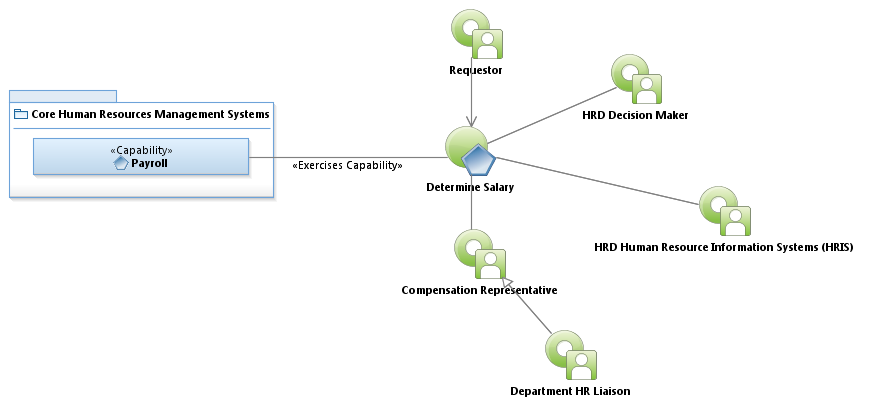

Activity Model: Determine Salary

Use Case Model: Determine Salary
Architect: Aaron Brown, IT Enterprise Architect Senior
Date Last Modified: 03/7/2013
User Review: Holly Moyer, Jim Benes, Sharon Huckabee, Sonya Alexander-Harry, Roberta Byram, Tommy Tucker
Date: 3/7/2013
Define an hourly rate recommendation.
Follow link to Role Definitions

Use Case Model: Determine Salary
Activity Model: Determine Salary
Activity Documentation
| Activity | Documentation |
|---|---|
| Request Needed Information from HRIS (internal Equity Path) | Perform averages on current salaries for comparable employees. Additionally, the department/Citywide (scope) for which the employee works is also considered. |